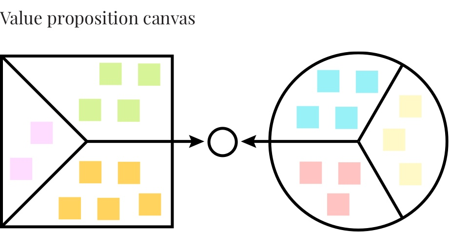

⟵ Scroll
A project to improve the relationship between Leroy Merlin Brazil and suppliers.
User experience, user interface, web application
The company has so many manual processes to communicate and resolve the issues with suppliers, this kind of operation was taking the employees time and they wasn't available to do their jobs done.
This project was created to improve the productivity and communication between the company and suppliers.
For every new feature, we started with a value proposition design canvas and we're working with Agile Method to develop the application.
The value proposition canvas helped us to understand the user's tasks, pains and what they seen as a gain, it's a good interview tool guide when you have a new system to create.
At this time the employees had to do the bank consolidation and then send to the supplier, but they had a lot of other tasks to do and then they kept their jobs always late. They had so many jobs that they need a person just to answer the emails.
After to understrand this scenario, I started to design a user flow for this solution, I tested the paper prototype with our keyuser to understand what could be improved, what was missing in the interface as soon as possible to create a more consistent high fidelity prototype.
I've tested the high fidelity prototype with the supplier, after those tests we started to develop our firts module. Today the supplier doesn't need to ask the employee to check about their bills.
The second module was the order schedule on the warehouses and stores. The company hasn't a system to schedule the orders from the suppliers and they needed like 5 days to do this for each supplier, they didn't have the visibility of which order was about to come or was late, the suppliers didn't have a system access to schedule their delivery orders and the employees has several problems with productivity.
We learned about those problems through the Value Proposition Canvas.
For this module I've done a user flow and a wireframe to test some interactions and the interface with the employees, as I tested, I realized how complex was this module, with so many business rules for different scenarios like one for store and other for warehouses and the system that I was designing had to support all those needs.
With the new solution the supplier can schedule in about 2 or 3 minutes without any help from the company and the employees can spend their time with other tasks.
This project was my first with supply chain and the financial departments.
I've never worked with a supply chain project before, so I had to learn a lot about logistics and their business rules. I had to learn about the suppliers reality and their pains too. Learned about when a big company doesn't have a good solution to work with the suppliers and what kind of problem the final custmer can have, like a lack of products to buy.
Today this project is a profit application with a lot of other modules.